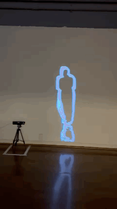
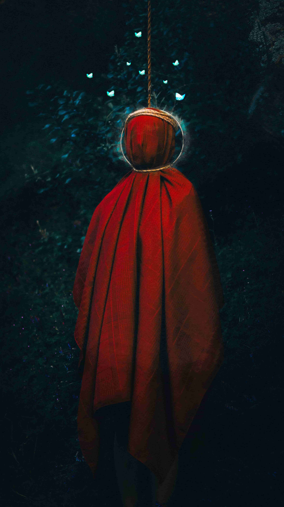
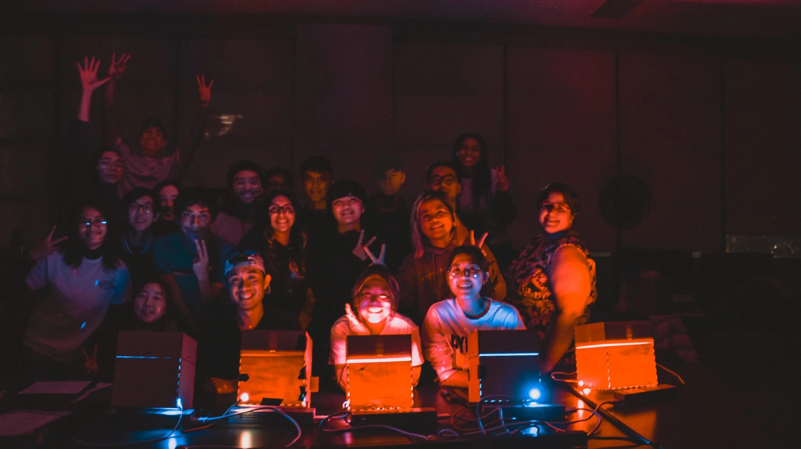
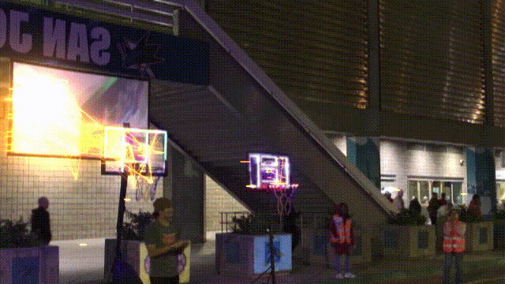

01
Digital Media Art / San Jose

Selected Work

01

02

03

04

05
About
What began as a simple hobby has grown into a focused practice centered on how digital systems shape perception and interaction. I work across graphic design, photography, and real time media, using tools such as TouchDesigner, Blender, and Adobe software. I build projects that test how images, data, and user input interact. This interest comes from a drive to understand how technical systems structure what we see, how we move, and how we respond.
I engage with new tools because they change the conditions of making and viewing. Real time engines, sensors, and generative systems shift authorship and introduce unpredictability. I draw on ideas from media theory and human-computer interaction to question what these systems are designed to do, who they serve, and how they guide behavior. My work treats technology as both a medium and a subject.
I create interactive environments that engage multiple senses through motion, sound, touch, and spatial awareness. These works require participation. Viewers trigger changes, navigate space, and shape outcomes through their presence and input.
My practice centers on building and testing. I prototype systems, observe how people engage with them, and refine the work through iteration. This process focuses on clarity, response, and connection between body, space, and system.
Nhat Minh Le is an undergraduate in Digital Media Art whose practice focuses on how digital systems shape interaction and perception. He works across graphic design, photography, and interactive media, using tools such as TouchDesigner, Blender, and Adobe Creative Suite to build visual systems, motion graphics, and immersive environments. His projects explore how images, data, and user input connect within real time spaces.
His work centers on interactive experiences that require participation. He combines motion, sound, and spatial design to create environments that respond to the presence and actions of viewers. These systems shift the role of the audience from observer to participant.
Through iterative making, he develops and tests new approaches to real time media and interaction. His projects examine how people engage with digital environments and how sensory input shapes that experience.
Code
Contact